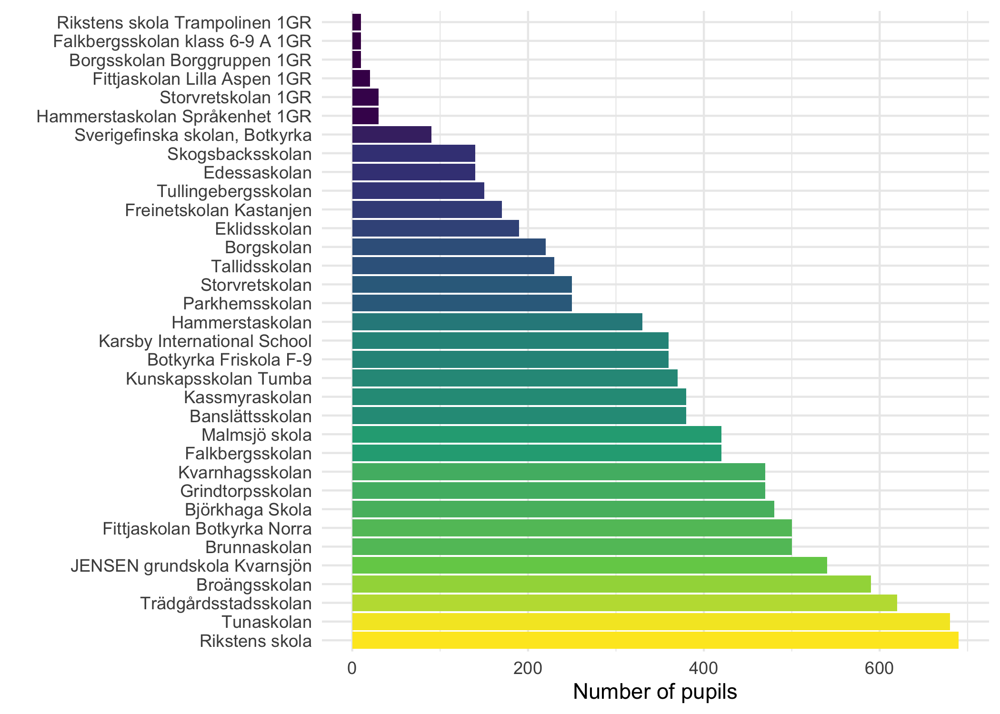

Data retrieval with R using API calls
The Swedish National Agency for Education database API
![]()
1 Background
This is a post documenting explorative work to retrieve data using the database API maintained Swedish National Agency for Education. The conditions for using the API and database are described in the CC0 1.0 license. The API is documented here: https://api.skolverket.se/skolenhetsregistret/swagger-ui/index.html.
Please note that this is just documentation of our work, not a guide. There will be mistakes and suboptimal routes taken. But in the end I hope we will produce something that may be useful to others. Not everyone will be interested in using the API for the same purpose as we had, so hopefully our troubleshooting will make the potential use wider.
A lot of the output will be in Swedish, but you will probably be able to follow along even if your Swedish knowledge is limited. Basic word list:
- school = skola
- school unit code = Skolenhetskod
The purpose of this is two-fold. First, various kinds of data on school and municipality levels are of interest in the project “Data in dialogue”. Second, in order to conduct analysis of missing data and selection bias we need demographic data about students at the schools participating in school surveys that are used to assess risk and protective factors.
While this blog post is written by me (Magnus), a lot of the initial trial and error work was done by my colleague Jens Mattsson.
2 Setting up
First, let’s get a list of municipalities and their codes. The first two numbers in the four number code denotes the region. Sweden has 290 municipalities and 21 regions. For this project, we are interested in the regions of Stockholm and Uppsala, which have codes 01 and 03.
Code
municipalities <- read_parquet("2023-03-28_KOLADA_Municipality_list.parquet") %>%
filter(str_detect(id, "^01|^03")) %>%
select(!type)
glimpse(municipalities)Rows: 34
Columns: 2
$ id <chr> "0127", "0162", "0125", "0381", "0136", "0331", "0126", "0305", …
$ title <chr> "Botkyrka", "Danderyd", "Ekerö", "Enköping", "Haninge", "Heby", …3 Getting data for one municipality
Looking at the specifications of the API, we should be able to get all schools in a municipality by doing a call according to /v1/kommun/{municipalityCode}. Unfortunately, the API does not seem to allow making one call for multiple municipalities. The base URL is https://api.skolverket.se/skolenhetsregistret.
We’ll start by getting data from one municipality.
Code
List of 3
$ Uttagsdatum: chr "2023-07-17T10:06:08.3666049+02:00"
$ Fotnot : NULL
$ Skolenheter:'data.frame': 66 obs. of 5 variables:
..$ Skolenhetskod : chr [1:66] "98152284" "84411355" "82464552" "16762245" ...
..$ Kommunkod : chr [1:66] "0127" "0127" "0127" "0127" ...
..$ PeOrgNr : chr [1:66] "2120002882" "5565661815" "5562575786" "8024242391" ...
..$ Skolenhetsnamn: chr [1:66] "Blåklintskolan särskola" "Kunskapsskolan Tumba" "Praktiska Tumba" "Edessaskolan" ...
..$ Status : chr [1:66] "Vilande" "Aktiv" "Vilande" "Aktiv" ...We get a list of 3, where the data of interest seems to be within the nested dataframe $Skolenheter. Let’s subset that into its own dataframe object.
Code
schools <- data$Skolenheter
glimpse(schools)Rows: 66
Columns: 5
$ Skolenhetskod <chr> "98152284", "84411355", "82464552", "16762245", "751689…
$ Kommunkod <chr> "0127", "0127", "0127", "0127", "0127", "0127", "0127",…
$ PeOrgNr <chr> "2120002882", "5565661815", "5562575786", "8024242391",…
$ Skolenhetsnamn <chr> "Blåklintskolan särskola", "Kunskapsskolan Tumba", "Pra…
$ Status <chr> "Vilande", "Aktiv", "Vilande", "Aktiv", "Vilande", "Akt…Now, this is just a list of schools and their unit codes (schools$Skolenhetskod), it contains no data. But we need this list to know which school unit codes to retrieve data for. There is also a Status variable which seems to have the options of active or not.
There was also a third option for “planned”. Not sure how to use this information at this point.
3.1 Data from one school
We’ll retrieve data for one school first.
Code
List of 3
$ Uttagsdatum : chr "2023-07-17T02:15:09.2287954+02:00"
$ Fotnot : NULL
$ SkolenhetInfo:List of 19
..$ Namn : chr "Kunskapsskolan Tumba"
..$ Rektorsnamn : chr "Henrik von Knorring"
..$ Skolenhetskod : chr "84411355"
..$ Epost : chr "info.tumba@kunskapsskolan.se"
..$ Telefon : chr "0733-173445"
..$ Webbadress : chr "https://www.kunskapsskolan.se"
..$ Besoksadress :List of 4
.. ..$ Adress : chr "Hans Stahles väg 17"
.. ..$ Postnr : chr "14741"
.. ..$ Ort : chr "Tumba"
.. ..$ GeoData:List of 5
..$ Leveransadress :List of 3
.. ..$ Adress: chr "Hans Stahles väg 17"
.. ..$ Postnr: chr "14741"
.. ..$ Ort : chr "Tumba"
..$ Utdelningsadress :List of 3
.. ..$ Adress: chr "Hans Stahles väg 17"
.. ..$ Postnr: chr "14741"
.. ..$ Ort : chr "Tumba"
..$ Inriktningstyp : chr "Allmän"
..$ Skolenhetstyp : chr "Skolenhet"
..$ SkolaNamn : chr "Kunskapsskolan Tumba"
..$ Skolformer :'data.frame': 1 obs. of 15 variables:
.. ..$ type : chr "Grundskola"
.. ..$ Benamning : chr "Grundskola"
.. ..$ SkolformID : int 5
.. ..$ SkolformKod : chr "11"
.. ..$ Ak1 : logi FALSE
.. ..$ Ak2 : logi FALSE
.. ..$ Ak3 : logi FALSE
.. ..$ Ak4 : logi TRUE
.. ..$ Ak5 : logi TRUE
.. ..$ Ak6 : logi TRUE
.. ..$ Ak7 : logi TRUE
.. ..$ Ak8 : logi TRUE
.. ..$ Ak9 : logi TRUE
.. ..$ Resursskola : logi FALSE
.. ..$ Sjukhusskola: logi FALSE
..$ Kommun :List of 2
.. ..$ Kommunkod: chr "0127"
.. ..$ Namn : chr "Botkyrka"
..$ Huvudman :List of 3
.. ..$ PeOrgNr: chr "5565661815"
.. ..$ Namn : chr "Kunskapsskolan i Sverige Aktiebolag"
.. ..$ Typ : chr "Enskild"
..$ Skolenhet_ValidFrom: chr "2022-09-07T00:00:00"
..$ Status : chr "Aktiv"
..$ Startdatum : chr "2013-10-01"
..$ Nedlaggningsdatum : NULLThis provides a lot of information about the school itself, which can be useful. There is also a version 3 of the API, which contains more information:
Code
List of 3
$ status : chr "OK"
$ message: chr ""
$ body :List of 16
..$ code : chr "84411355"
..$ name : chr "Kunskapsskolan Tumba"
..$ contactInfo :List of 4
.. ..$ email : NULL
.. ..$ web : chr "https://www.kunskapsskolan.se"
.. ..$ telephone: chr "0733-173445"
.. ..$ addresses:'data.frame': 2 obs. of 4 variables:
..$ geographicalAreaCode : chr "0127"
..$ wgs84_Lat : chr "59.20011169538554"
..$ wgs84_Long : chr "17.846722627859616"
..$ sweRef_N : chr "6565805"
..$ sweRef_E : chr "662569"
..$ organisationRegistryNumber: chr "5565661815"
..$ principalOrganizerType : chr "Fristående"
..$ corporationName : chr "Kunskapsskolan i Sverige Aktiebolag"
..$ companyForm : chr "Övriga aktiebolag"
..$ schoolOrientation : chr "Allmän"
..$ typeOfSchooling :'data.frame': 1 obs. of 3 variables:
.. ..$ code : chr "gr"
.. ..$ displayName: chr "Grundskolan"
.. ..$ schoolYears:List of 1
..$ abroadSchool : logi FALSE
..$ _links :List of 2
.. ..$ self :List of 1
.. ..$ statistics:List of 1Can we find statistics for the school?
Code
List of 3
$ status : chr "OK"
$ message: chr ""
$ body :List of 1
..$ _links:List of 2
.. ..$ gr-statistics:List of 1
.. ..$ self :List of 1No data, but some clues:
Code
test$body$`_links`$`gr-statistics`$href
[1] "https://api.skolverket.se/planned-educations/v3/school-units/84411355/statistics/gr"We’ll try that URL.
Code
List of 3
$ status : chr "OK"
$ message: chr ""
$ body :List of 24
..$ schoolUnit : chr "84411355"
..$ specialTeacherPositions :'data.frame': 5 obs. of 3 variables:
.. ..$ value : chr [1:5] "." "." "." "." ...
.. ..$ valueType : chr [1:5] "MISSING" "MISSING" "MISSING" "MISSING" ...
.. ..$ timePeriod: chr [1:5] "2022/23" "2021/22" "2020/21" "2019/20" ...
..$ studentsPerTeacherQuota :'data.frame': 5 obs. of 3 variables:
.. ..$ value : chr [1:5] "15,5" "14,8" "16,6" "16,3" ...
.. ..$ valueType : chr [1:5] "EXISTS" "EXISTS" "EXISTS" "EXISTS" ...
.. ..$ timePeriod: chr [1:5] "2022/23" "2021/22" "2020/21" "2019/20" ...
..$ certifiedTeachersQuota :'data.frame': 5 obs. of 3 variables:
.. ..$ value : chr [1:5] "67,4" "60,9" "56,2" "47,0" ...
.. ..$ valueType : chr [1:5] "EXISTS" "EXISTS" "EXISTS" "EXISTS" ...
.. ..$ timePeriod: chr [1:5] "2022/23" "2021/22" "2020/21" "2019/20" ...
..$ docLinks : NULL
..$ hasLibrary : logi FALSE
..$ specialEducatorsQuota :'data.frame': 5 obs. of 3 variables:
.. ..$ value : chr [1:5] "." "." "." "." ...
.. ..$ valueType : chr [1:5] "MISSING" "MISSING" "MISSING" "MISSING" ...
.. ..$ timePeriod: chr [1:5] "2022/23" "2021/22" "2020/21" "2019/20" ...
..$ totalNumberOfPupils :'data.frame': 1 obs. of 3 variables:
.. ..$ value : chr "cirka 370"
.. ..$ valueType : chr "EXISTS"
.. ..$ timePeriod: chr "2022/23"
..$ ratioOfPupilsIn6thGradeWithAllSubjectsPassed :'data.frame': 1 obs. of 3 variables:
.. ..$ value : chr "61,0"
.. ..$ valueType : chr "EXISTS"
.. ..$ timePeriod: chr "2021/22"
..$ averageResultNationalTestsSubjectSVE6thGrade :'data.frame': 3 obs. of 3 variables:
.. ..$ value : chr [1:3] "13,4" "14,4" "13,6"
.. ..$ valueType : chr [1:3] "EXISTS" "EXISTS" "EXISTS"
.. ..$ timePeriod: chr [1:3] "2021/22" "2018/19" "2017/18"
..$ averageResultNationalTestsSubjectENG6thGrade :'data.frame': 3 obs. of 3 variables:
.. ..$ value : chr [1:3] "16,0" "15,8" "15,4"
.. ..$ valueType : chr [1:3] "EXISTS" "EXISTS" "EXISTS"
.. ..$ timePeriod: chr [1:3] "2021/22" "2018/19" "2017/18"
..$ averageResultNationalTestsSubjectMA6thGrade :'data.frame': 3 obs. of 3 variables:
.. ..$ value : chr [1:3] "9,5" "10,9" "12,4"
.. ..$ valueType : chr [1:3] "EXISTS" "EXISTS" "EXISTS"
.. ..$ timePeriod: chr [1:3] "2021/22" "2018/19" "2017/18"
..$ averageResultNationalTestsSubjectSVA6thGrade :'data.frame': 3 obs. of 3 variables:
.. ..$ value : chr [1:3] "10,2" ".." ".."
.. ..$ valueType : chr [1:3] "EXISTS" "OMITTED_DUE_TO_BASED_ON_FEW_PUPILS" "OMITTED_DUE_TO_BASED_ON_FEW_PUPILS"
.. ..$ timePeriod: chr [1:3] "2021/22" "2018/19" "2017/18"
..$ averageResultNationalTestsSubjectSVE9thGrade :'data.frame': 3 obs. of 3 variables:
.. ..$ value : chr [1:3] "14,4" "15,4" "14,5"
.. ..$ valueType : chr [1:3] "EXISTS" "EXISTS" "EXISTS"
.. ..$ timePeriod: chr [1:3] "2021/22" "2018/19" "2017/18"
..$ averageResultNationalTestsSubjectENG9thGrade :'data.frame': 3 obs. of 3 variables:
.. ..$ value : chr [1:3] "17,1" "16,1" "15,1"
.. ..$ valueType : chr [1:3] "EXISTS" "EXISTS" "EXISTS"
.. ..$ timePeriod: chr [1:3] "2021/22" "2018/19" "2017/18"
..$ averageResultNationalTestsSubjectMA9thGrade :'data.frame': 3 obs. of 3 variables:
.. ..$ value : chr [1:3] "12,1" "11,9" "."
.. ..$ valueType : chr [1:3] "EXISTS" "EXISTS" "MISSING"
.. ..$ timePeriod: chr [1:3] "2021/22" "2018/19" "2017/18"
..$ averageResultNationalTestsSubjectSVA9thGrade :'data.frame': 3 obs. of 3 variables:
.. ..$ value : chr [1:3] "14,6" "15,3" "13,6"
.. ..$ valueType : chr [1:3] "EXISTS" "EXISTS" "EXISTS"
.. ..$ timePeriod: chr [1:3] "2021/22" "2018/19" "2017/18"
..$ ratioOfPupilsIn9thGradeWithAllSubjectsPassed :'data.frame': 5 obs. of 3 variables:
.. ..$ value : chr [1:5] "85,2" "89,5" "90,2" "75,0" ...
.. ..$ valueType : chr [1:5] "EXISTS" "EXISTS" "EXISTS" "EXISTS" ...
.. ..$ timePeriod: chr [1:5] "2021/22" "2020/21" "2019/20" "2018/19" ...
..$ averageGradesMeritRating9thGrade :'data.frame': 5 obs. of 3 variables:
.. ..$ value : chr [1:5] "254,8" "261,5" "272,3" "249,0" ...
.. ..$ valueType : chr [1:5] "EXISTS" "EXISTS" "EXISTS" "EXISTS" ...
.. ..$ timePeriod: chr [1:5] "2021/22" "2020/21" "2019/20" "2018/19" ...
..$ ratioOfPupils9thGradeEligibleForNationalProgramYR :'data.frame': 5 obs. of 3 variables:
.. ..$ value : chr [1:5] "93,8" "~100" "~100" "91,7" ...
.. ..$ valueType : chr [1:5] "EXISTS" "ROUNDED_OFF_DUE_TO_FEW_PUPILS_NOT_ELIGIBLE" "ROUNDED_OFF_DUE_TO_FEW_PUPILS_NOT_ELIGIBLE" "EXISTS" ...
.. ..$ timePeriod: chr [1:5] "2021/22" "2020/21" "2019/20" "2018/19" ...
..$ ratioOfPupils9thGradeEligibleForNationalProgramES :'data.frame': 5 obs. of 3 variables:
.. ..$ value : chr [1:5] "92,6" "94,7" "~100" "90,5" ...
.. ..$ valueType : chr [1:5] "EXISTS" "EXISTS" "ROUNDED_OFF_DUE_TO_FEW_PUPILS_NOT_ELIGIBLE" "EXISTS" ...
.. ..$ timePeriod: chr [1:5] "2021/22" "2020/21" "2019/20" "2018/19" ...
..$ ratioOfPupils9thGradeEligibleForNationalProgramSAEKHU:'data.frame': 5 obs. of 3 variables:
.. ..$ value : chr [1:5] "91,4" "93,7" "~100" "82,1" ...
.. ..$ valueType : chr [1:5] "EXISTS" "EXISTS" "ROUNDED_OFF_DUE_TO_FEW_PUPILS_NOT_ELIGIBLE" "EXISTS" ...
.. ..$ timePeriod: chr [1:5] "2021/22" "2020/21" "2019/20" "2018/19" ...
..$ ratioOfPupils9thGradeEligibleForNationalProgramNATE :'data.frame': 5 obs. of 3 variables:
.. ..$ value : chr [1:5] "88,9" "94,7" "91,8" "86,9" ...
.. ..$ valueType : chr [1:5] "EXISTS" "EXISTS" "EXISTS" "EXISTS" ...
.. ..$ timePeriod: chr [1:5] "2021/22" "2020/21" "2019/20" "2018/19" ...
..$ _links :List of 1
.. ..$ self:List of 1It seems like we need to specify the type of school to retrieve the stats. In this case, “gr” for “grundskola”, which corresponds to classes 1-9 in Sweden (ages ~ 7-15).
3.2 Data wrangling
Some data wrangling will be needed to get the list() format data into a dataframe that can be used as a template for downloading and merging data for all schools we are interested in.
So that works to get one list out. Now let’s do all that contain a variable named value and get them in a single dataframe. A relatively simple way to do this (in the current data) is to filter the list elements that contain more than one value.
[1] "specialTeacherPositions"
[2] "studentsPerTeacherQuota"
[3] "certifiedTeachersQuota"
[4] "specialEducatorsQuota"
[5] "totalNumberOfPupils"
[6] "ratioOfPupilsIn6thGradeWithAllSubjectsPassed"
[7] "averageResultNationalTestsSubjectSVE6thGrade"
[8] "averageResultNationalTestsSubjectENG6thGrade"
[9] "averageResultNationalTestsSubjectMA6thGrade"
[10] "averageResultNationalTestsSubjectSVA6thGrade"
[11] "averageResultNationalTestsSubjectSVE9thGrade"
[12] "averageResultNationalTestsSubjectENG9thGrade"
[13] "averageResultNationalTestsSubjectMA9thGrade"
[14] "averageResultNationalTestsSubjectSVA9thGrade"
[15] "ratioOfPupilsIn9thGradeWithAllSubjectsPassed"
[16] "averageGradesMeritRating9thGrade"
[17] "ratioOfPupils9thGradeEligibleForNationalProgramYR"
[18] "ratioOfPupils9thGradeEligibleForNationalProgramES"
[19] "ratioOfPupils9thGradeEligibleForNationalProgramSAEKHU"
[20] "ratioOfPupils9thGradeEligibleForNationalProgramNATE" Then we can bind them together.
Code
# create empty dataframe to store output of loop in
df_total <- data.frame()
for (i in names(vars)){
tmp <- test$body %>%
pluck(i) %>%
add_column(variable = i)
df_total <- rbind(df_total,tmp)
}
glimpse(df_total)Rows: 76
Columns: 4
$ value <chr> ".", ".", ".", ".", ".", "15,5", "14,8", "16,6", "16,3", "1…
$ valueType <chr> "MISSING", "MISSING", "MISSING", "MISSING", "MISSING", "EXI…
$ timePeriod <chr> "2022/23", "2021/22", "2020/21", "2019/20", "2018/19", "202…
$ variable <chr> "specialTeacherPositions", "specialTeacherPositions", "spec…Looks good, although there will probably be a lot of recoding needed later.
3.3 Getting data from multiple schools
Since the API demands that we specify the type of school in the API call, we need to add this information to the list of schools. This means that we first need to retrieve the basic information for each school.
Code
[1] "gr"So that is where we find the type code for each school.
3.3.1 Check if all schools have data in the database.
Code
schoolsAvailable <- data.frame()
for (i in schools$Skolenhetskod) {
tmp <- http_status(GET(paste0("https://api.skolverket.se/planned-educations/v3/school-units/", i))) %>%
pluck("reason") %>%
as.data.frame(nm = "status") %>%
add_column(Skolenhetskod = i)
schoolsAvailable <- rbind(schoolsAvailable, tmp)
}
schoolsAvailable %>%
count(status) status n
1 Not Found 14
2 OK 5214 schools are not in the database and need to be removed from the list of schools before we retrieve data. Maybe they match up with the Status variable?
Skolenhetskod Kommunkod PeOrgNr Skolenhetsnamn
1 98152284 0127 2120002882 Blåklintskolan särskola
2 82464552 0127 5562575786 Praktiska Tumba
3 75168956 0127 2120002882 Borggruppen 1GR
4 34165541 0127 8020170026 Stockholms Folkhögskola
5 30755074 0127 2120002882 Björkhaga Skola 1GR
6 66301878 0127 2120002882 Enheten för språk och kultur
7 96827136 0127 5566446224 Gryningeskolan
8 58395177 0127 2120002882 S:t Botvids gymnasiums mottagarenhet
9 60492213 0127 2120002882 Språkcentrum
10 43096141 0127 8024030119 Botkyrka Folkhögskola SFI
11 20171551 0127 2120002882 Tallidsskolan träningsskola
12 75727919 0127 5590247374 Lumiaskolan Botkyrka
13 26480061 0127 5566139290 Thoren Framtid Botkyrka
14 81020581 0127 2120002882 Borgskolan F-klass Gul 1GR
Status status
1 Vilande Not Found
2 Vilande Not Found
3 Vilande Not Found
4 Vilande Not Found
5 Vilande Not Found
6 Vilande Not Found
7 Vilande Not Found
8 Vilande Not Found
9 Vilande Not Found
10 Vilande Not Found
11 Vilande Not Found
12 Planerad Not Found
13 Planerad Not Found
14 Vilande Not FoundIndeed, but not a perfect match, since the numbers don’t add up when compared to this:
Proceeding to remove schools unavailable in database.
Code
schoolsFiltered <- schools %>%
left_join(.,schoolsAvailable, by = "Skolenhetskod") %>%
filter(status == "OK") %>%
select(!status)
schoolTypes <- data.frame()
for (i in schoolsFiltered$Skolenhetskod) {
tmp <- GET(paste0("https://api.skolverket.se/planned-educations/v3/school-units/", i)) %>%
content("text") %>%
fromJSON()
tmp2 <- data.frame(
type = tmp$body$typeOfSchooling$code,
Skolenhetskod = i)
schoolTypes <- rbind(schoolTypes,tmp2)
}
glimpse(schoolTypes)Rows: 82
Columns: 2
$ type <chr> "gr", "fsk", "gr", "fsk", "gr", "gy", "gy", "gy", "fsk",…
$ Skolenhetskod <chr> "84411355", "16762245", "16762245", "29524966", "2952496…Hmm. We have 82 schools in this set, rather than 52. Maybe some schools have multiple types?
Skolenhetskod n
1 10495223 2
2 10657244 2
3 15620768 2
4 16762245 2
5 18534178 2
6 25506439 2
7 25918983 2
8 29524966 2
9 36350546 2
10 38661388 2
11 40631085 2
12 43238662 2
13 45757947 2
14 51863294 2
15 53426548 2
16 56417100 2
17 57228484 2
18 57850353 2
19 58310322 2
20 67742754 2
21 71048800 2
22 75580959 2
23 80378022 3
24 80731562 2
25 84891659 2
26 86192571 2
27 86985859 2
28 96113241 3Yes, most of them do.
3.3.2 Data retrieval
Since we have two variables to loop over, we could use a nested for() loop, but we could also use map2() to retrieve data for all schools.
3.4 Unnesting multiple lists
Next step is to get each schools data from a list element to a dataframe, and then combine all of them. We already did the first part for one school, so let’s expand on that.
We’ll define a function to get the data from one school.
Code
oneSchool <- function(listN) {
schoolUnit <- schoolData[[listN]]$body$schoolUnit
df_total <- data.frame()
for (i in names(vars)) {
tmp <- schoolData[[listN]]$body %>%
pluck(i) %>%
add_column(variable = i,
Skolenhetskod = schoolUnit)
df_total <- rbind(df_total, tmp)
}
return(df_total)
}Test the function.
value valueType timePeriod variable Skolenhetskod
1 . MISSING 2022/23 specialTeacherPositions 84411355
2 . MISSING 2021/22 specialTeacherPositions 84411355
3 . MISSING 2020/21 specialTeacherPositions 84411355
4 . MISSING 2019/20 specialTeacherPositions 84411355
5 . MISSING 2018/19 specialTeacherPositions 84411355
6 15,5 EXISTS 2022/23 studentsPerTeacherQuota 84411355
7 14,8 EXISTS 2021/22 studentsPerTeacherQuota 84411355
8 16,6 EXISTS 2020/21 studentsPerTeacherQuota 84411355
9 16,3 EXISTS 2019/20 studentsPerTeacherQuota 84411355
10 15,3 EXISTS 2018/19 studentsPerTeacherQuota 84411355Looks good.
This fails at index 2. (Code is not run since it won’t allow the output to be rendered)
3.5 Troubleshooting
Code
schoolData[[2]]$body$schoolUnit
[1] "16762245"
$specialTeacherPositions
value valueType timePeriod
1 . MISSING 2022/23
2 . MISSING 2021/22
3 . MISSING 2020/21
4 . MISSING 2019/20
5 . MISSING 2018/19
$studentsPerTeacherQuota
value valueType timePeriod
1 13,0 EXISTS 2022/23
2 11,0 EXISTS 2021/22
3 12,0 EXISTS 2020/21
4 12,0 EXISTS 2019/20
5 13,7 EXISTS 2018/19
$certifiedTeachersQuota
value valueType timePeriod
1 0,0 EXISTS 2022/23
2 0,0 EXISTS 2021/22
3 50,0 EXISTS 2020/21
4 50,0 EXISTS 2019/20
5 57,1 EXISTS 2018/19
$docLinks
NULL
$hasLibrary
[1] FALSE
$totalNumberOfPupils
value valueType timePeriod
1 cirka 30 EXISTS 2022/23
$`_links`
$`_links`$self
$`_links`$self$href
[1] "https://api.skolverket.se/planned-educations/v3/school-units/16762245/statistics/fsk"Looks like not all schools have the same data variables. We’ll have to work that into the function
Code
oneSchool <- function(listN) {
schoolUnit <- schoolData[[listN]]$body$schoolUnit
vars <- which(sapply(schoolData[[listN]]$body, function(x) length(x) > 1)) # added line of code
df_total <- data.frame()
for (i in names(vars)) {
tmp <- schoolData[[listN]]$body %>%
pluck(i) %>%
add_column(variable = i,
Skolenhetskod = schoolUnit)
df_total <- rbind(df_total, tmp)
}
return(df_total)
}Failing at index 6… (Code is not run since it won’t allow the output to be rendered)
programCode averageResultNationalTestsSubjectSVE sveSubjectTest
1 EK 13,1, EXISTS, VT22 Svenska 3
2 IMV NA, MISSING, NA <NA>
3 NA 15,5, EXISTS, VT22 Svenska 3
4 SA 12,7, EXISTS, VT22 Svenska 3
5 TE 15,7, EXISTS, VT22 Svenska 3
averageResultNationalTestsSubjectSVA svaSubjectTest
1 .., OMITTED_DUE_TO_BASED_ON_FEW_PUPILS, VT22 Svenska som andraspråk 3
2 NA, MISSING, NA <NA>
3 15,9, EXISTS, VT22 Svenska som andraspråk 3
4 14,0, EXISTS, VT22 Svenska som andraspråk 3
5 .., OMITTED_DUE_TO_BASED_ON_FEW_PUPILS, VT22 Svenska som andraspråk 3
averageResultNationalTestsSubjectMA1 ma1SubjectTest
1 11,8, EXISTS, VT22 Matematik 2B
2 NA, MISSING, NA <NA>
3 NA, MISSING, NA <NA>
4 10,4, EXISTS, VT22 Matematik 2B
5 NA, MISSING, NA <NA>
averageResultNationalTestsSubjectMA2 ma2SubjectTest
1 10,3, EXISTS, VT22 Matematik 3B
2 NA, MISSING, NA <NA>
3 13,5, EXISTS, VT22 Matematik 4
4 NA, MISSING, NA <NA>
5 11,3, EXISTS, VT22 Matematik 4
averageResultNationalTestsSubjectENG engSubjectTest schoolUnit
1 15,8, EXISTS, VT22 Engelska 6 26334561
2 NA, MISSING, NA <NA> 26334561
3 16,4, EXISTS, VT22 Engelska 6 26334561
4 14,9, EXISTS, VT22 Engelska 6 26334561
5 16,6, EXISTS, VT22 Engelska 6 26334561
specialTeacherPositions studentsPerTeacherQuota certifiedTeachersQuota
1 NA, MISSING, 2022/23 16,5, EXISTS, 2022/23 88,7, EXISTS, 2022/23
2 NA, MISSING, 2022/23 16,5, EXISTS, 2022/23 88,7, EXISTS, 2022/23
3 NA, MISSING, 2022/23 16,5, EXISTS, 2022/23 88,7, EXISTS, 2022/23
4 NA, MISSING, 2022/23 16,5, EXISTS, 2022/23 88,7, EXISTS, 2022/23
5 NA, MISSING, 2022/23 16,5, EXISTS, 2022/23 88,7, EXISTS, 2022/23
docLinks hasLibrary totalNumberOfPupils
1 NA TRUE cirka 180, EXISTS, 2022/23
2 NA TRUE cirka 10, EXISTS, 2022/23
3 NA TRUE cirka 210, EXISTS, 2022/23
4 NA TRUE cirka 180, EXISTS, 2022/23
5 NA TRUE cirka 90, EXISTS, 2022/23
ratioOfStudentsEligibleForUndergraduateEducation
1 98,4, 100,0, 90,7, 94,7, 100,0, EXISTS, EXISTS, EXISTS, EXISTS, EXISTS, 2021/22, 2020/21, 2019/20, 2018/19, 2017/18
2 NULL
3 96,7, 94,4, 94,4, 94,3, 86,6, EXISTS, EXISTS, EXISTS, EXISTS, EXISTS, 2021/22, 2020/21, 2019/20, 2018/19, 2017/18
4 93,1, 92,7, 87,3, 96,4, 89,4, EXISTS, EXISTS, EXISTS, EXISTS, EXISTS, 2021/22, 2020/21, 2019/20, 2018/19, 2017/18
5 96,7, 88,9, 100,0, 87,5, EXISTS, EXISTS, EXISTS, EXISTS, 2021/22, 2020/21, 2019/20, 2018/19
gradesPointsForStudents
1 14,2, 14,7, 14,1, 15,0, 14,2, EXISTS, EXISTS, EXISTS, EXISTS, EXISTS, 2021/22, 2020/21, 2019/20, 2018/19, 2017/18
2 NULL
3 15,6, 15,0, 16,5, 15,4, 14,3, EXISTS, EXISTS, EXISTS, EXISTS, EXISTS, 2021/22, 2020/21, 2019/20, 2018/19, 2017/18
4 14,2, 14,6, 14,2, 13,5, 13,6, EXISTS, EXISTS, EXISTS, EXISTS, EXISTS, 2021/22, 2020/21, 2019/20, 2018/19, 2017/18
5 15,6, 14,9, 15,4, 14,0, EXISTS, EXISTS, EXISTS, EXISTS, 2021/22, 2020/21, 2019/20, 2018/19
gradesPointsForStudentsWithExam
1 14,3, 14,7, 14,4, 15,2, 14,2, EXISTS, EXISTS, EXISTS, EXISTS, EXISTS, 2021/22, 2020/21, 2019/20, 2018/19, 2017/18
2 NULL
3 15,8, 15,3, 16,9, 15,6, 15,1, EXISTS, EXISTS, EXISTS, EXISTS, EXISTS, 2021/22, 2020/21, 2019/20, 2018/19, 2017/18
4 14,6, 15,0, 15,0, 13,8, 14,1, EXISTS, EXISTS, EXISTS, EXISTS, EXISTS, 2021/22, 2020/21, 2019/20, 2018/19, 2017/18
5 15,7, 15,7, 15,4, 14,9, EXISTS, EXISTS, EXISTS, EXISTS, 2021/22, 2020/21, 2019/20, 2018/19
ratioOfPupilsWithExamWithin3Years
1 96,8, 100,0, 86,0, 91,2, 89,7, EXISTS, EXISTS, EXISTS, EXISTS, EXISTS, 2019/20, 2018/19, 2017/18, 2016/17, 2015/16
2 NULL
3 93,4, 86,9, 86,7, 90,1, 77,8, EXISTS, EXISTS, EXISTS, EXISTS, EXISTS, 2019/20, 2018/19, 2017/18, 2016/17, 2015/16
4 86,4, 83,6, 78,6, 85,7, 74,3, EXISTS, EXISTS, EXISTS, EXISTS, EXISTS, 2019/20, 2018/19, 2017/18, 2016/17, 2015/16
5 93,8, 83,3, 100,0, 82,4, EXISTS, EXISTS, EXISTS, EXISTS, 2019/20, 2018/19, 2017/18, 2016/17
admissionPointsMin admissionPointsAverage admissionPointsSemester
1 260,0, EXISTS, 2022 280,0, EXISTS, 2022 NA
2 NA, MISSING, NA NA, MISSING, NA NA
3 267,5, EXISTS, 2022 305,9, EXISTS, 2022 NA
4 247,5, EXISTS, 2022 278,8, EXISTS, 2022 NA
5 270,0, EXISTS, 2022 290,2, EXISTS, 2022 NA
specialEducatorsQuota
1 ., MISSING, 2022/23
2 ., MISSING, 2022/23
3 ., MISSING, 2022/23
4 ., MISSING, 2022/23
5 ., MISSING, 2022/23
href
1 https://api.skolverket.se/planned-educations/v3/school-units/26334561/statistics/gy
2 https://api.skolverket.se/planned-educations/v3/school-units/26334561/statistics/gy
3 https://api.skolverket.se/planned-educations/v3/school-units/26334561/statistics/gy
4 https://api.skolverket.se/planned-educations/v3/school-units/26334561/statistics/gy
5 https://api.skolverket.se/planned-educations/v3/school-units/26334561/statistics/gyThere is a variable that has more than 3 columns, which doesn’t fit into our data structure.
Code
schoolData[[6]]$body$schoolUnitNULLNo unit code in the data, at least not at the position we expected it to be stored at. We can see the school unit code in the previous code chunk.
This is “gy”, a Gymnasieskola.
Code
schoolTypes %>%
rownames_to_column() %>%
filter(type == "gy") rowname type Skolenhetskod
1 6 gy 26334561
2 7 gy 40386043
3 8 gy 97758137
4 18 gy 53400472
5 74 gy 60096875Looks like we have 5 of those. Maybe they all share the same structure?
Code
gySchools <- schoolTypes %>%
rownames_to_column() %>%
filter(type == "gy") %>%
pull(rowname) %>%
as.numeric()
map(gySchools, ~ names(schoolData[[.x]]$body))[[1]]
[1] "programMetrics" "specialTeacherPositions"
[3] "studentsPerTeacherQuota" "certifiedTeachersQuota"
[5] "specialEducatorsQuota" "totalNumberOfPupils"
[[2]]
[1] "programMetrics" "specialTeacherPositions"
[3] "studentsPerTeacherQuota" "certifiedTeachersQuota"
[5] "specialEducatorsQuota" "totalNumberOfPupils"
[[3]]
[1] "programMetrics" "specialTeacherPositions"
[3] "studentsPerTeacherQuota" "certifiedTeachersQuota"
[5] "specialEducatorsQuota" "totalNumberOfPupils"
[[4]]
[1] "programMetrics" "specialTeacherPositions"
[3] "studentsPerTeacherQuota" "certifiedTeachersQuota"
[5] "specialEducatorsQuota" "totalNumberOfPupils"
[[5]]
[1] "programMetrics" "specialTeacherPositions"
[3] "studentsPerTeacherQuota" "certifiedTeachersQuota"
[5] "specialEducatorsQuota" "totalNumberOfPupils" They do. Perhaps we should back up and just focus on one type of schools, and sort the differences out later on.
Which types are available?
type n
1 fsk 27
2 gr 34
3 gran 10
4 gy 5
5 gyan 2
6 sfi 1
7 vux 2
8 vuxgys 1Let’s get the full descriptions of these abbreviations.
Code
schoolTypes <- data.frame()
for (i in schoolsFiltered$Skolenhetskod) {
tmp <- GET(paste0("https://api.skolverket.se/planned-educations/v3/school-units/", i)) %>%
content("text") %>%
fromJSON()
tmp2 <- data.frame(
type = tmp$body$typeOfSchooling$code,
typeDesc = tmp$body$typeOfSchooling$displayName,
Skolenhetskod = i)
schoolTypes <- rbind(schoolTypes,tmp2)
}
schoolTypes %>%
count(typeDesc,type) typeDesc type n
1 Anpassad grundskola gran 10
2 Anpassad gymnasieskola gyan 2
3 Förskoleklassen fsk 27
4 Grundskolan gr 34
5 Gymnasieskolan gy 5
6 Kommunal vuxenutbildning i svenska för invandrare sfi 1
7 Kommunal vuxenutbildning på gymnasial nivå vux 2
8 Särskild utbildning för vuxna på gymnasial nivå vuxgys 1For our purposes, we are primarily interested in gr and gy, and some stats from fsk, but not the rest. This filtering should of course have been done earlier, but the first part of this post was written on a Saturday after 2 weeks of vacation and my brain was not quite up to speed…
3.6 Data retrieval with filtering on school types
We’ll do them separately this time, starting with “gr” only.
Code
mapSchoolUnits <- schoolTypes %>%
rownames_to_column() %>%
filter(type == "gr") %>%
pull(rowname) %>%
as.numeric()
nestedOutputGR <- map(mapSchoolUnits, ~ oneSchool(.x))
glimpse(nestedOutputGR[[1]])Rows: 76
Columns: 5
$ value <chr> ".", ".", ".", ".", ".", "15,5", "14,8", "16,6", "16,3",…
$ valueType <chr> "MISSING", "MISSING", "MISSING", "MISSING", "MISSING", "…
$ timePeriod <chr> "2022/23", "2021/22", "2020/21", "2019/20", "2018/19", "…
$ variable <chr> "specialTeacherPositions", "specialTeacherPositions", "s…
$ Skolenhetskod <chr> "84411355", "84411355", "84411355", "84411355", "8441135…Now each school (of type “gr”) has its own dataframe, stored within the list object nestedOutputGR. Next step is to combine them into one dataframe.
3.7 Combining dataframes
Code
Rows: 1,962
Columns: 5
$ value <chr> ".", ".", ".", ".", ".", "15,5", "14,8", "16,6", "16,3",…
$ valueType <chr> "MISSING", "MISSING", "MISSING", "MISSING", "MISSING", "…
$ timePeriod <chr> "2022/23", "2021/22", "2020/21", "2019/20", "2018/19", "…
$ variable <chr> "specialTeacherPositions", "specialTeacherPositions", "s…
$ Skolenhetskod <chr> "84411355", "84411355", "84411355", "84411355", "8441135…Data is now in long format, which will be useful for some uses, and we can use pivot_wider() to change format when needed.
All variables are class “character”, which is fine for some, but timePeriod is a date variable, and value has “.” for missing and “,” as decimal sign. This needs to be modified.
4 Variables
Let’s have a look at the variables available in the data.
# A tibble: 20 × 2
variable n
<chr> <int>
1 averageGradesMeritRating9thGrade 109
2 averageResultNationalTestsSubjectENG6thGrade 78
3 averageResultNationalTestsSubjectENG9thGrade 66
4 averageResultNationalTestsSubjectMA6thGrade 78
5 averageResultNationalTestsSubjectMA9thGrade 66
6 averageResultNationalTestsSubjectSVA6thGrade 78
7 averageResultNationalTestsSubjectSVA9thGrade 66
8 averageResultNationalTestsSubjectSVE6thGrade 78
9 averageResultNationalTestsSubjectSVE9thGrade 66
10 certifiedTeachersQuota 166
11 ratioOfPupils9thGradeEligibleForNationalProgramES 109
12 ratioOfPupils9thGradeEligibleForNationalProgramNATE 109
13 ratioOfPupils9thGradeEligibleForNationalProgramSAEKHU 109
14 ratioOfPupils9thGradeEligibleForNationalProgramYR 109
15 ratioOfPupilsIn6thGradeWithAllSubjectsPassed 34
16 ratioOfPupilsIn9thGradeWithAllSubjectsPassed 109
17 specialEducatorsQuota 166
18 specialTeacherPositions 166
19 studentsPerTeacherQuota 166
20 totalNumberOfPupils 344.1 Types
# A tibble: 5 × 2
valueType n
<chr> <int>
1 EXISTS 1358
2 MISSING 300
3 OMITTED_DUE_TO_BASED_ON_FEW_PUPILS 216
4 ROUNDED_OFF_DUE_TO_FEW_PUPILS_NOT_ELIGIBLE 73
5 TEACHERS_EXCLUDED_DUE_TO_NO_REQUIRED_LEGITIMATION 15Let’s look at the value variable for the different valueTypes (except EXISTS).
# A tibble: 5 × 2
# Groups: valueType [4]
valueType value
<chr> <chr>
1 MISSING .
2 OMITTED_DUE_TO_BASED_ON_FEW_PUPILS ..
3 ROUNDED_OFF_DUE_TO_FEW_PUPILS_NOT_ELIGIBLE ~100
4 TEACHERS_EXCLUDED_DUE_TO_NO_REQUIRED_LEGITIMATION *
5 MISSING <NA> We need the value variable to be of class numeric, which means only numerics and NA values are allowed.
4.2 Recoding
Code
# remaining cleanup
df.gr$value <- car::recode(df.gr$value,"'..'=NA") # too few pupils
df.gr$value <- car::recode(df.gr$value,"'*'=NA") # no req for teacher license
df.gr$value <- gsub("cirka ", "", df.gr$value)
df.gr$value <- gsub("~", "", df.gr$value)
df.gr$value <- as.numeric(df.gr$value)4.2.1 Date variable
First remove the second part of the school year designation (extract the first 4 digits).
Code
# date variable
df.gr$timePeriod <- str_extract(df.gr$timePeriod, "\\d{4}")
df.gr$timePeriod <- as.integer(df.gr$timePeriod)
df.gr %>%
count(timePeriod)# A tibble: 7 × 2
timePeriod n
<int> <int>
1 2017 314
2 2018 456
3 2019 260
4 2020 262
5 2021 496
6 2022 166
7 NA 8We could transform this to a date format variable, but having dates as year numerics is fine for our intended use.
5 Visualizing data
Code
# we like to use school names instead of codes when creating figures
df.gr <- left_join(df.gr,schools, by = "Skolenhetskod")5.1 Variable check
Code
| Characteristic | 2017, N = 3141 | 2018, N = 4561 | 2019, N = 2601 | 2020, N = 2621 | 2021, N = 4961 | 2022, N = 1661 |
|---|---|---|---|---|---|---|
| variable | ||||||
| averageGradesMeritRating9thGrade | 21 (6.7%) | 22 (4.8%) | 22 (8.5%) | 21 (8.0%) | 23 (4.6%) | 0 (0%) |
| averageResultNationalTestsSubjectENG6thGrade | 26 (8.3%) | 26 (5.7%) | 0 (0%) | 0 (0%) | 26 (5.2%) | 0 (0%) |
| averageResultNationalTestsSubjectENG9thGrade | 21 (6.7%) | 22 (4.8%) | 0 (0%) | 0 (0%) | 23 (4.6%) | 0 (0%) |
| averageResultNationalTestsSubjectMA6thGrade | 26 (8.3%) | 26 (5.7%) | 0 (0%) | 0 (0%) | 26 (5.2%) | 0 (0%) |
| averageResultNationalTestsSubjectMA9thGrade | 21 (6.7%) | 22 (4.8%) | 0 (0%) | 0 (0%) | 23 (4.6%) | 0 (0%) |
| averageResultNationalTestsSubjectSVA6thGrade | 26 (8.3%) | 26 (5.7%) | 0 (0%) | 0 (0%) | 26 (5.2%) | 0 (0%) |
| averageResultNationalTestsSubjectSVA9thGrade | 21 (6.7%) | 22 (4.8%) | 0 (0%) | 0 (0%) | 23 (4.6%) | 0 (0%) |
| averageResultNationalTestsSubjectSVE6thGrade | 26 (8.3%) | 26 (5.7%) | 0 (0%) | 0 (0%) | 26 (5.2%) | 0 (0%) |
| averageResultNationalTestsSubjectSVE9thGrade | 21 (6.7%) | 22 (4.8%) | 0 (0%) | 0 (0%) | 23 (4.6%) | 0 (0%) |
| certifiedTeachersQuota | 0 (0%) | 33 (7.2%) | 32 (12%) | 34 (13%) | 34 (6.9%) | 33 (20%) |
| ratioOfPupils9thGradeEligibleForNationalProgramES | 21 (6.7%) | 22 (4.8%) | 22 (8.5%) | 21 (8.0%) | 23 (4.6%) | 0 (0%) |
| ratioOfPupils9thGradeEligibleForNationalProgramNATE | 21 (6.7%) | 22 (4.8%) | 22 (8.5%) | 21 (8.0%) | 23 (4.6%) | 0 (0%) |
| ratioOfPupils9thGradeEligibleForNationalProgramSAEKHU | 21 (6.7%) | 22 (4.8%) | 22 (8.5%) | 21 (8.0%) | 23 (4.6%) | 0 (0%) |
| ratioOfPupils9thGradeEligibleForNationalProgramYR | 21 (6.7%) | 22 (4.8%) | 22 (8.5%) | 21 (8.0%) | 23 (4.6%) | 0 (0%) |
| ratioOfPupilsIn6thGradeWithAllSubjectsPassed | 0 (0%) | 0 (0%) | 0 (0%) | 0 (0%) | 26 (5.2%) | 0 (0%) |
| ratioOfPupilsIn9thGradeWithAllSubjectsPassed | 21 (6.7%) | 22 (4.8%) | 22 (8.5%) | 21 (8.0%) | 23 (4.6%) | 0 (0%) |
| specialEducatorsQuota | 0 (0%) | 33 (7.2%) | 32 (12%) | 34 (13%) | 34 (6.9%) | 33 (20%) |
| specialTeacherPositions | 0 (0%) | 33 (7.2%) | 32 (12%) | 34 (13%) | 34 (6.9%) | 33 (20%) |
| studentsPerTeacherQuota | 0 (0%) | 33 (7.2%) | 32 (12%) | 34 (13%) | 34 (6.9%) | 33 (20%) |
| totalNumberOfPupils | 0 (0%) | 0 (0%) | 0 (0%) | 0 (0%) | 0 (0%) | 34 (20%) |
| 1 n (%) | ||||||
5.2 Number of pupils per school
Code
Only data from 2022 for that variable. We need to look elsewhere for historical data, it seems. It would also be useful to have the number of pupils per class, since we want to make comparisons to survey data responses. However, the documentation of this variable indicates that number of pupils is rounded to nearest 10th:
“Antal elever på skolenheten, avrundat till tiotal. 1-14 elever ger 10, 15-24 elever ger 20, 25-34 elever ger 30, enkelprick förekommer om elever saknas. Uppgiften samlas in 15 oktober varje år och uppdatering sker i mars året efter insamling.”
Also, we can see that there are several school units that have very similar names, or represent parts of the same schools. This data is clearly quite complex in its structure.
As a bonus item, here is a more suitable type of figure to illustrate data from a single year,
Code
df.gr %>%
filter(variable == "totalNumberOfPupils") %>%
mutate(Skolenhetsnamn = factor(Skolenhetsnamn)) %>%
ggplot(aes(x = fct_reorder(Skolenhetsnamn, desc(value)),
y = value,
fill = value)) +
geom_col() +
theme_minimal() +
labs(x = "",
y = "Number of pupils") +
scale_fill_viridis_c(guide = "none") +
coord_flip()
5.3 studentsPerTeacherQuota
Here we have data from multiple school years.
Code
Huge variation, probably since there are schools in the data that seem to represent special education groups. Let’s look at the average numbers across years and sort out the 10 with the lowest number of pupils per teacher.
Code
# A tibble: 10 × 2
Skolenhetsnamn Average
<chr> <dbl>
1 Rikstens skola Trampolinen 1GR 3.88
2 Storvretskolan 1GR 5.34
3 Borgsskolan Borggruppen 1GR 5.78
4 Hammerstaskolan Språkenhet 1GR 5.82
5 Fittjaskolan Lilla Aspen 1GR 6
6 Falkbergsskolan klass 6-9 A 1GR 7.08
7 Freinetskolan Kastanjen 9.66
8 Sverigefinska skolan, Botkyrka 10
9 Storvretskolan 11.3
10 Hammerstaskolan 11.5 We’ll remove the ones with “1GR” at the end of the school name.
Code

Let’s update our information about the schools with some more variables. This will get a bit complicated since an API call for a school unit that has more than one type will contain strings for some variables instead of single values. Also, the schoolYear variable is a string in itself, so we need to get the first and last value from that and combine into one value.
Code
schoolUnitCodes <- schoolTypes %>%
filter(type == "gr") %>%
pull(Skolenhetskod)
schoolTypes2 <- data.frame() # making a new dataframe, to avoid overwriting the old one when we test things
for (i in schoolUnitCodes) {
tmp <- GET(paste0("https://api.skolverket.se/planned-educations/v3/school-units/", i)) %>%
content("text") %>%
fromJSON()
if (length(tmp$body$typeOfSchooling$code) > 1){ # if both fsk and gr
tmp2 <- data.frame(
type = tmp$body$typeOfSchooling$code[2],
principalOrganizerType = tmp$body$principalOrganizerType,
companyForm = tmp$body$companyForm,
schoolYears = paste0(tmp$body$typeOfSchooling$schoolYears[2][[1]][1],"-",tmp$body$typeOfSchooling$schoolYears[2][[1]][length(tmp$body$typeOfSchooling$schoolYears[2][[1]])]),
corporationName = tmp$body$corporationName,
latitude = tmp$body$wgs84_Lat,
longitude = tmp$body$wgs84_Long,
zipCode = tmp$body$contactInfo$addresses$zipCode[2],
Skolenhetskod = i)
schoolTypes2 <- bind_rows(schoolTypes2,tmp2)
} else { # when schoolType only "gr"
tmp2 <- data.frame(
type = tmp$body$typeOfSchooling$code,
principalOrganizerType = tmp$body$principalOrganizerType,
companyForm = tmp$body$companyForm,
schoolYears = paste0(tmp$body$typeOfSchooling$schoolYears[1][[1]][1],"-",tmp$body$typeOfSchooling$schoolYears[1][[1]][length(tmp$body$typeOfSchooling$schoolYears[1][[1]])]),
corporationName = tmp$body$corporationName,
latitude = tmp$body$wgs84_Lat,
longitude = tmp$body$wgs84_Long,
zipCode = tmp$body$contactInfo$addresses$zipCode,
Skolenhetskod = i)
schoolTypes2 <- bind_rows(schoolTypes2,tmp2)
}
}
schoolTypes2 <- left_join(schoolTypes2,schools, by = "Skolenhetskod")
glimpse(schoolTypes2)Rows: 41
Columns: 13
$ type <chr> "gr", "gr", "gr", "gr", "gr", "gr", "gr", "gr",…
$ principalOrganizerType <chr> "Fristående", "Fristående", "Fristående", "Fris…
$ companyForm <chr> "Övriga aktiebolag", "Övriga aktiebolag", "Övri…
$ schoolYears <chr> "4-9", "4-9", "1-6", "1-9", "1-9", "6-9", "6-9"…
$ corporationName <chr> "Kunskapsskolan i Sverige Aktiebolag", "Kunskap…
$ latitude <chr> "59.20011169538554", "59.20011169538554", "59.2…
$ longitude <chr> "17.846722627859616", "17.846722627859616", "17…
$ zipCode <chr> "14741", "14741", "14568", "14574", "14740", "1…
$ Skolenhetskod <chr> "84411355", "84411355", "16762245", "29524966",…
$ Kommunkod <chr> "0127", "0127", "0127", "0127", "0127", "0127",…
$ PeOrgNr <chr> "5565661815", "5565661815", "8024242391", "7696…
$ Skolenhetsnamn <chr> "Kunskapsskolan Tumba", "Kunskapsskolan Tumba",…
$ Status <chr> "Aktiv", "Aktiv", "Aktiv", "Aktiv", "Aktiv", "A…Well, that was a handful to work out. And we only get “gr” schools, so a similar process will be necessary if we want to get the other school types. It should at least be a lot quicker since we have worked out some solutions already, depending on the differences in data structure.
6 Todo
A couple of things on the todo list:
- getting data for school types “fsk” and “gy”
- getting data for all municipalities in a region
7 More demographics
It seems that there are other types of data available for manual download. I have been unable to find these using the API documentation and exploration. I emailed Skolverket and asked them if it is possible to retrieve this data via API, and unfortunately it is not in the database made available by database. I manually downloaded the files and combined them. The website URL for manual downloads is here
I’ve limited this example to the last five years, thus five files.
First, let’s read one file. I’ve already done some exploring here, which resulted in skipping the first five rows (which contains what should be meta-data basically) and using semi-colon for separation of data fields. Also, the amazing janitor::clean_names() is used, an empty variable is removed, and a year variable is added.
Specifying “.” and “..” as missing data indicators would seem accurate, but doing this when importing data screws up decimal points later, so we need a manual recode after import.
Code
library(janitor)
library(car)
read_delim("data/Grundskolan - Antal elever per årskurs 2022 Skolenhet.csv",
skip = 5, delim = ";") %>%
clean_names() %>%
select(!x23) %>%
add_column(year = 2022) %>%
glimpse()Rows: 4,740
Columns: 23
$ skola <chr> "Ahla…
$ skol_enhetskod <dbl> 71387…
$ skolkommun <chr> "Ale"…
$ kommun_kod <chr> "1440…
$ typ_av_huvudman <chr> "Ensk…
$ huvudman <chr> "Ahla…
$ huvudman_orgnr <dbl> 76961…
$ elever_forskoleklass <chr> "22",…
$ andel_percent_flickor_forskoleklass <chr> "..",…
$ elever_arskurs_1_9 <chr> "258"…
$ andel_percent_flickor_arskurs_1_9 <chr> "48,4…
$ andel_percent_elever_med_utlandsk_bakgrund_ak_1_9 <chr> "4,7"…
$ andel_percent_elever_med_foraldrar_med_eftergymnasial_utb_ak_1_9 <chr> "69,8…
$ elever_arskurs_1 <chr> "24",…
$ elever_arskurs_2 <chr> "22",…
$ elever_arskurs_3 <chr> "22",…
$ elever_arskurs_4 <chr> "25",…
$ elever_arskurs_5 <chr> "49",…
$ elever_arskurs_6 <chr> "23",…
$ elever_arskurs_7 <chr> "24",…
$ elever_arskurs_8 <chr> "46",…
$ elever_arskurs_9 <chr> "23",…
$ year <dbl> 2022,…Some recodings are in order.
Code
read_delim("data/Grundskolan - Antal elever per årskurs 2022 Skolenhet.csv",
skip = 5, delim = ";") %>%
clean_names() %>%
select(!x23) %>%
add_column(year = 2022) %>%
mutate(across(elever_forskoleklass:elever_arskurs_9, ~ car::recode(.x,"'.'=NA;'..'=NA"))) %>%
mutate(across(starts_with("andel"), ~ gsub(",",".",.x))) %>%
mutate(across(starts_with("andel"), ~ as.numeric(.x))) %>%
mutate(elever_arskurs_1_9 = as.numeric(elever_arskurs_1_9),
skol_enhetskod = as.numeric(skol_enhetskod)) %>%
glimpse()Rows: 4,740
Columns: 23
$ skola <chr> "Ahla…
$ skol_enhetskod <dbl> 71387…
$ skolkommun <chr> "Ale"…
$ kommun_kod <chr> "1440…
$ typ_av_huvudman <chr> "Ensk…
$ huvudman <chr> "Ahla…
$ huvudman_orgnr <dbl> 76961…
$ elever_forskoleklass <dbl> 22, N…
$ andel_percent_flickor_forskoleklass <dbl> NA, N…
$ elever_arskurs_1_9 <dbl> 258, …
$ andel_percent_flickor_arskurs_1_9 <dbl> 48.4,…
$ andel_percent_elever_med_utlandsk_bakgrund_ak_1_9 <dbl> 4.7, …
$ andel_percent_elever_med_foraldrar_med_eftergymnasial_utb_ak_1_9 <dbl> 69.8,…
$ elever_arskurs_1 <dbl> 24, N…
$ elever_arskurs_2 <dbl> 22, N…
$ elever_arskurs_3 <dbl> 22, N…
$ elever_arskurs_4 <dbl> 25, 6…
$ elever_arskurs_5 <dbl> 49, 6…
$ elever_arskurs_6 <dbl> 23, 5…
$ elever_arskurs_7 <dbl> 24, N…
$ elever_arskurs_8 <dbl> 46, N…
$ elever_arskurs_9 <dbl> 23, N…
$ year <dbl> 2022,…And now, putting all files into the same dataframe.
Code
# get all filenames in the folder
fileList <- list.files(path = "data/", full.names=TRUE)
years <- c(2018:2022)
# create an empty list to store data in
data <- list()
# loop over filenames to import them to the list object
for (i in c(1:length(fileList))) {
data[[i]] <- read_delim(fileList[i],
skip = 5, delim = ";") %>%
clean_names() %>%
select(!x23) %>%
add_column(year = years[i]) %>%
mutate(across(elever_forskoleklass:elever_arskurs_9, ~ car::recode(.x,"'.'=NA;'..'=NA"))) %>%
mutate(across(starts_with("andel"), ~ gsub(",",".",.x))) %>%
mutate(across(starts_with("andel"), ~ as.numeric(.x))) %>%
mutate(elever_arskurs_1_9 = as.numeric(elever_arskurs_1_9),
skol_enhetskod = as.numeric(skol_enhetskod))
}
### Combine all nested lists into one dataframe
df <- map_dfr(c(1:5), ~ do.call(bind_rows, data[[.x]]))
glimpse(df)Rows: 24,027
Columns: 23
$ skola <chr> "Ahla…
$ skol_enhetskod <dbl> 71387…
$ skolkommun <chr> "Ale"…
$ kommun_kod <chr> "1440…
$ typ_av_huvudman <chr> "Ensk…
$ huvudman <chr> "Ahla…
$ huvudman_orgnr <dbl> 76961…
$ elever_forskoleklass <dbl> 22, N…
$ andel_percent_flickor_forskoleklass <dbl> NA, N…
$ elever_arskurs_1_9 <dbl> 244, …
$ andel_percent_flickor_arskurs_1_9 <dbl> 51, 4…
$ andel_percent_elever_med_utlandsk_bakgrund_ak_1_9 <dbl> NA, 9…
$ andel_percent_elever_med_foraldrar_med_eftergymnasial_utb_ak_1_9 <dbl> 64, 4…
$ elever_arskurs_1 <dbl> 22, N…
$ elever_arskurs_2 <dbl> 22, N…
$ elever_arskurs_3 <dbl> 22, N…
$ elever_arskurs_4 <dbl> 44, 5…
$ elever_arskurs_5 <dbl> 20, 4…
$ elever_arskurs_6 <dbl> 21, 6…
$ elever_arskurs_7 <dbl> 44, N…
$ elever_arskurs_8 <dbl> 24, N…
$ elever_arskurs_9 <dbl> 25, N…
$ year <int> 2018,…There we go. And now we can write the dataframe to a compressed file if we want to. Parquet is a really fast and efficient open format that is included in library(arrow).
Code
write_parquet(df,"SkolverketData.parquet")Reuse
Citation
@online{johansson2023,
author = {Magnus Johansson and Jens Mattsson},
title = {Data Retrieval with {R} Using {API} Calls},
date = {2023-07-19},
url = {https://pgmj.github.io/SkolverketAPI/skolverketapi.html},
langid = {en}
}